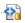

如何使用 Git
文/xuld
GIT 是一个类似 SVN、CVS 的版本控制软件。它能方便地管理代码分支。
图标
-  - 已同步，本地的文件和远程的一致。
- - 新文件， 本地存在，但远程不存在的文件。
 - 已更新，本地和远程都存在，但2个文件内容有差别。
- 已更新，本地和远程都存在，但2个文件内容有差别。
常用菜单

常用的菜单有：
-
拉(Pull) ：从服务器获取最新版本。它不会强制覆盖本地的更改，如果远程的版本和本地的不同，会引发一个冲突。
-
合并(Merge)： 发生冲突后，将发生冲突的文件合并成新的版本。
-
提交(Commit)： 将本地的修改在本地提交。注意这里的 Commit 不会提交到服务器，而只是本地的提交。在提交的时候，必须说明此次修改的内容。
-
远程/推(Remote/Push)：把本地经过提交的文件保存到服务器。
-
忽略(Ignore)： 在提交的时候忽略当前文件。
-
恢复(Revert)：把本地已提交的文件恢复成上次提交的状态。
从这些命令可知: 在每次开始工作前,先执行Pull, 以将其它人的修改下载到本地。在工作中，每完成一段工作后，就执行 Commit ，以保存阶段性的结果。在工作结束前，执行 Push， 将全部Commit的结果反馈到服务器。
其它命令读者可参考其它专业的 GIT 教程。
原 SVN 用户转型 GIT 指南
SVN 和GIT 主要区别有：
-
GIT 规定每次 Commit 都要有说明。
-
GIT 的 Commit 和 SVN 的 Commit 不同， GIT 中的 Commit 和 Push 一起就是SVN 的 Commit 。
-
GIT 允许多个分支并行， SVN 只能有一个主分支。